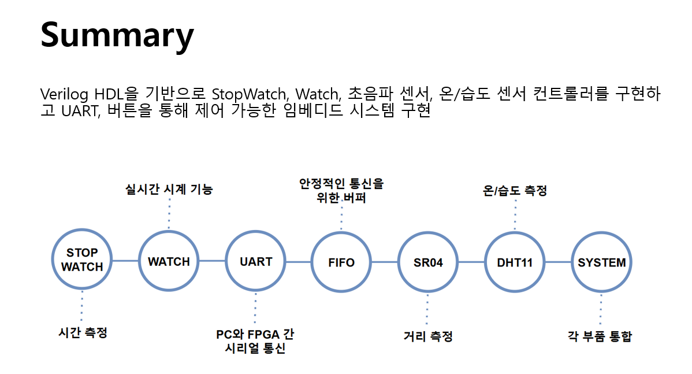
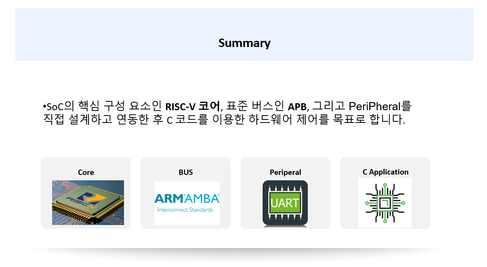
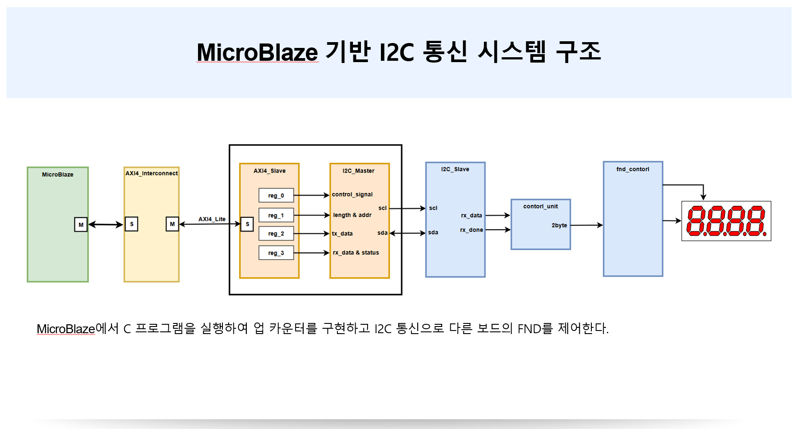

0 Project complete
Education
2018.03~2024.02
전자 공학 전공
Seokyeong Univercity전자공학 전공을 통해 디지털 회로, 전자회로, 컴퓨터 구조 등 하드웨어 설계의 기반을 다졌습니다. 학업 외에도 회로 설계 동아리 활동을 통해 수업에서 배운 내용을 직접 실습하며 전공지식을 넓혀갔습니다. 함께 배우고 성장하는 과정 속에서 협업과 꾸준함의 중요성을 배웠습니다.
2024.01~2024.04
디지털 트랙(칩설계 특화)
IDECVerilog HDL 설계부터 SoC 구조 이해까지 학습하며 디지털 회로 설계의 기초를 다졌습니다. 이어, Synopsys의 Design Compiler, Formality, PrimeTime, ICC2 등 다양한 EDA 툴을 활용하여 ASIC 설계의 front-end부터 back-end까지 전체 flow를 직접 수행하며 실무 수준의 설계 경험을 쌓았습니다.
2025.07~2026.01
[HARMAN] 세미콘아카데미-시스템반도체 설계/검증 엔지니어
대한상공회의소디지털 회로 및 SoC 설계 전반을 학습하며 RTL 설계와 검증 능력을 강화했습니다. Verilog/SystemVerilog를 활용해 설계와 검증을 직접 수행하였으며, Synopsys·Vivado 툴을 통해 FPGA 설계를 실습했습니다. 매 프로젝트마다 다른 팀원들과 역할을 분담하고 설계 검증 과정을 함께 논의하면서, 실무에서 요구되는 협업 능력과 문제 해결 능력을 키웠습니다.
Skills
Verilog
90%
SystemVerilog
80%
Python
75%
C
80%
Projects
2025.07 ~ 2025.08 (4人 팀 프로젝트)
Basys3 FPGA 보드를 활용하여 시계, 스톱워치, 온습도 및 거리 측정 기능이 통합된 다기능 디스플레이 모듈 개발
UART 통신을 활용한 다기능 디스플레이 모듈 개발

2025.09 ~ 2025.10 (1人 팀 프로젝트)

RV32I ISA 구조의 Single Cylce CPU 설계
RV32I Base Integer Instruction Set에 명시된 모든 명령어 구현
RV32I기반 Single Cycle CPU 설계
2025.10 ~ 2025.10 (1人 팀 프로젝트)
RV32I 기반 Multi-Cylce CPU 설계
AMBA APB 버스 시스템 설계
APB 기반 FIFO UART Peripheral 설계
C Application 구현 및 시스템 검증
RV32I기반 AMBA APB UART Peripheral 설계

2025.11 ~ 2025.11 (1人 개인 프로젝트)
AXI4-Lite 기반 I2C 통신 프로토콜 설계

- SystemVerilog 기반 I2C Master/Slave FSM 및 Datapath 설계
- MicroBlaze 연동을 위한 AXI4-Lite Bus Interface를 활용해 I2C Master 모듈 개발 및 통합
- I2C 제어 레지스터(Control Register) 설정을 위한 C 펌웨어 개발
2025.11 ~ 2025.12 (4人 팀 프로젝트)

OV7670 & FPGA 기반 모션 인식 필터 피아노
- OV7670 카메라 제어를 위한 SCCB Controller 및 I2C Master 설계
- RGB 영상 처리(Red Tracker)를 통한 모션 인식 및 좌표 기반 피아노 인터페이스 구현
- UART 통신을 통한 PC(Python) 연동 및 실시간 영상 필터(눈, 벚꽃, 번개) 오버레이
Projects
Side Projects
꾸준히 사이드 프로젝트를 진행하며, 다양한 분야의 기술 스택을 경험해왔습니다.
Blog
My Blog
꾸준히 배우고 성장하는 과정을 기록합니다.
하드웨어의 깊은 이해를 위해 학습하고 고민했던 흔적들을 공유하는 공간입니다.
Learning Log & Tech Archive
Verilog, SoC, Programming 등 하드웨어 엔지니어링에 필요한 지식을 꾸준히 학습하고 정리하는 개인 지식 베이스입니다.
My GitHub Repositories
지금까지 진행했던 프로젝트들의 소스 코드와 개인적으로 공부한 코드 기록을 모아둔 공간입니다..
Contact
Contact Me
회사와 함께 성장하는 개발자가 되겠습니다. 연락주세요.
Address
서울시 노원구 상계동